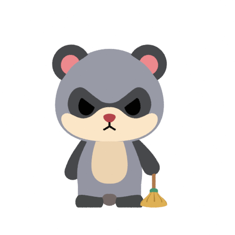
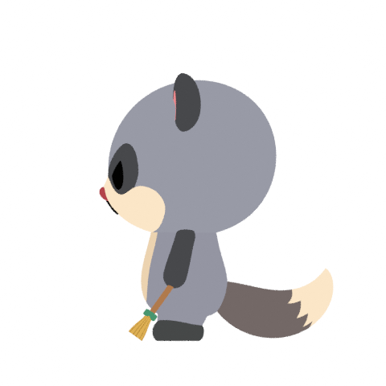
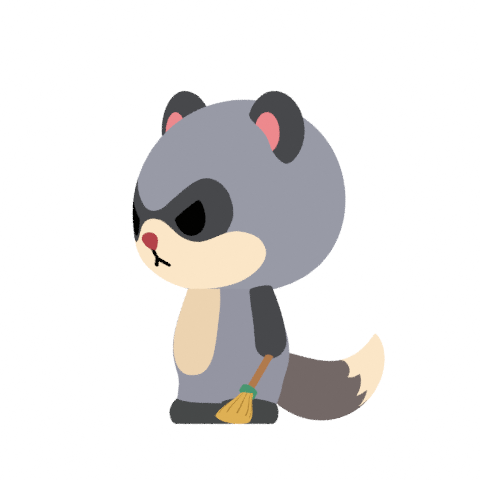

Pull, lift, return.
New cleaning motion reference and the fitted native key poses. Three inward floor pulls alternate with visibly lifted returns, while the adopted character shapes stay familiar.
Source + verified key poses available · Full animation renderingThis is an interim review. All 13 key poses, body contours, native edit/reset and reopen checks pass. The complete eight-second, six-view playback and editable download will be added after sequence review.
New original · Hailuo3 r036.583 seconds · 24 fps · Unmodified original. Selected for choreography; generated anatomy, foot shifts and broom proportions are excluded.
Provisionally adopted Sweep376 seconds · 60 fps · Exact preserved baseline. Independent playback. Full baseline review
New native · key poses
The native keeps planted feet and the original body, thigh, arm and broom construction. It follows the three source pulls and returns, then adds a settle from 6.55 to 8 seconds.
0.00 seconds
Front
Side
Oblique
All key poses and body-only contours
New source and Sweep38 remain pending owner review. This is scoped shape/contact verification, not complete architecture qualification. Earlier originals and adopted releases remain preserved.